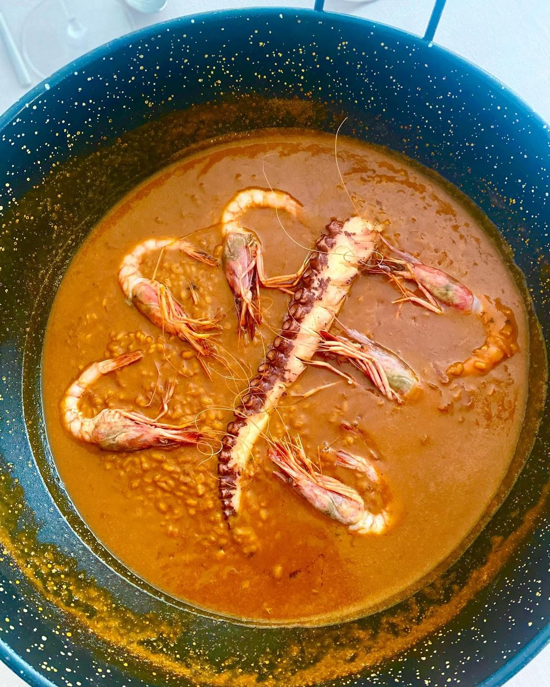
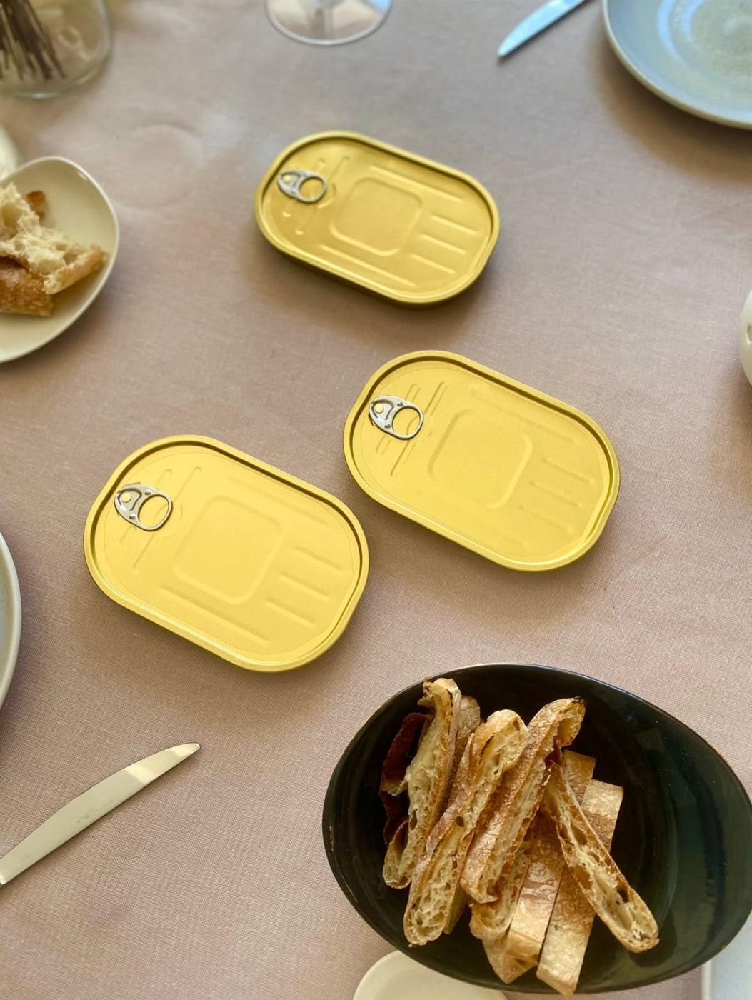
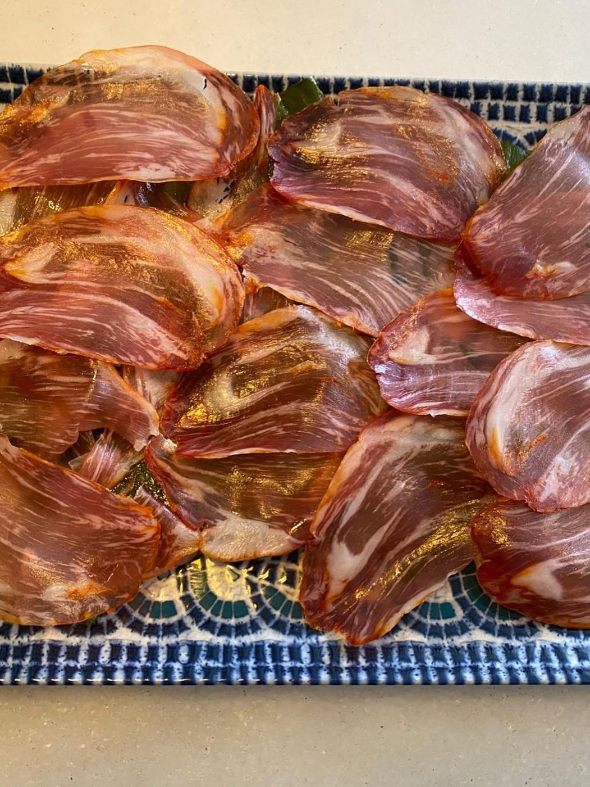
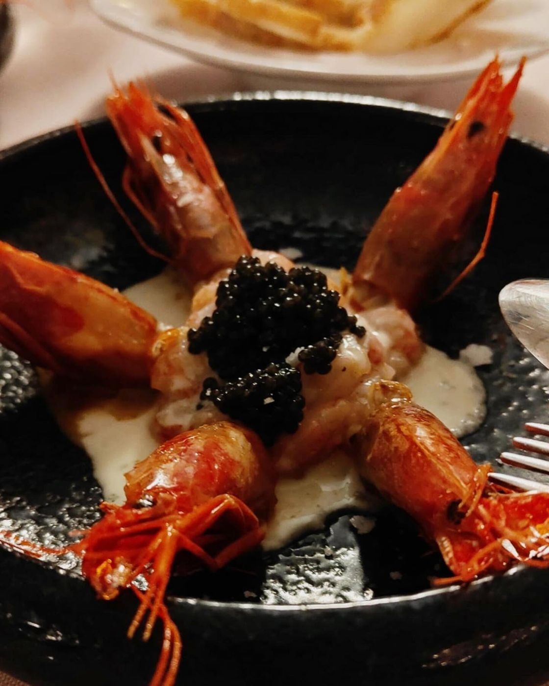
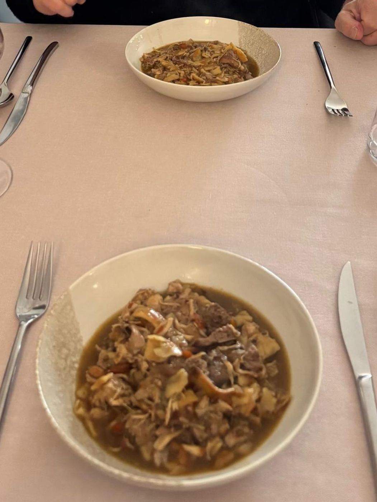
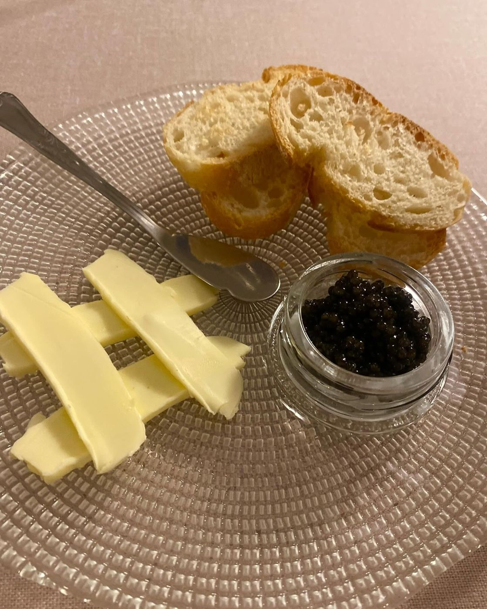
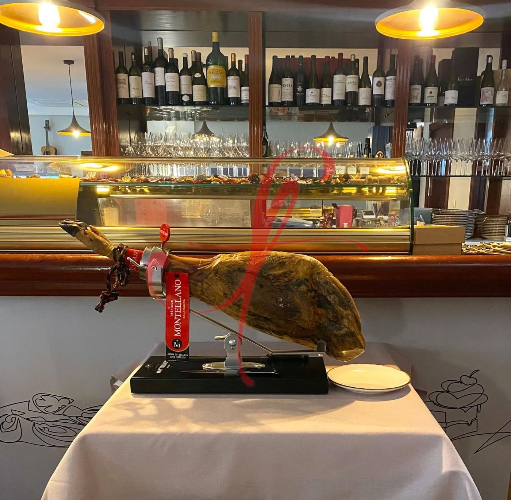
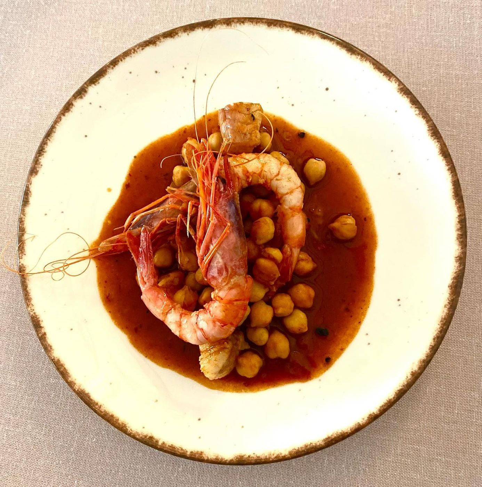
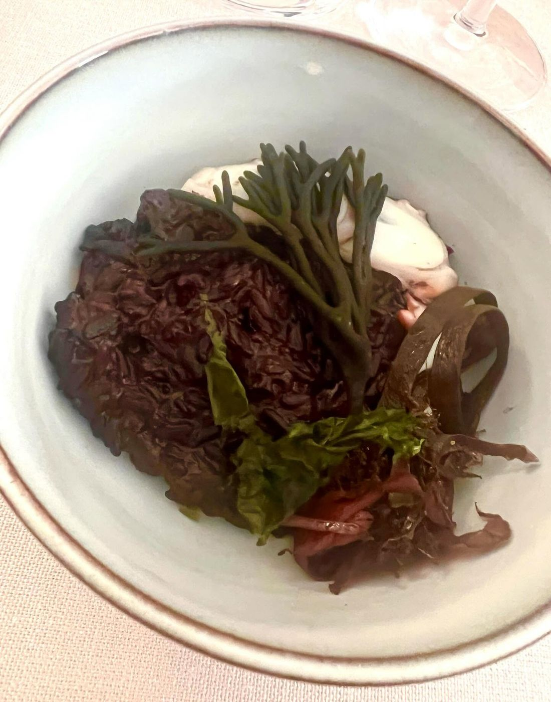
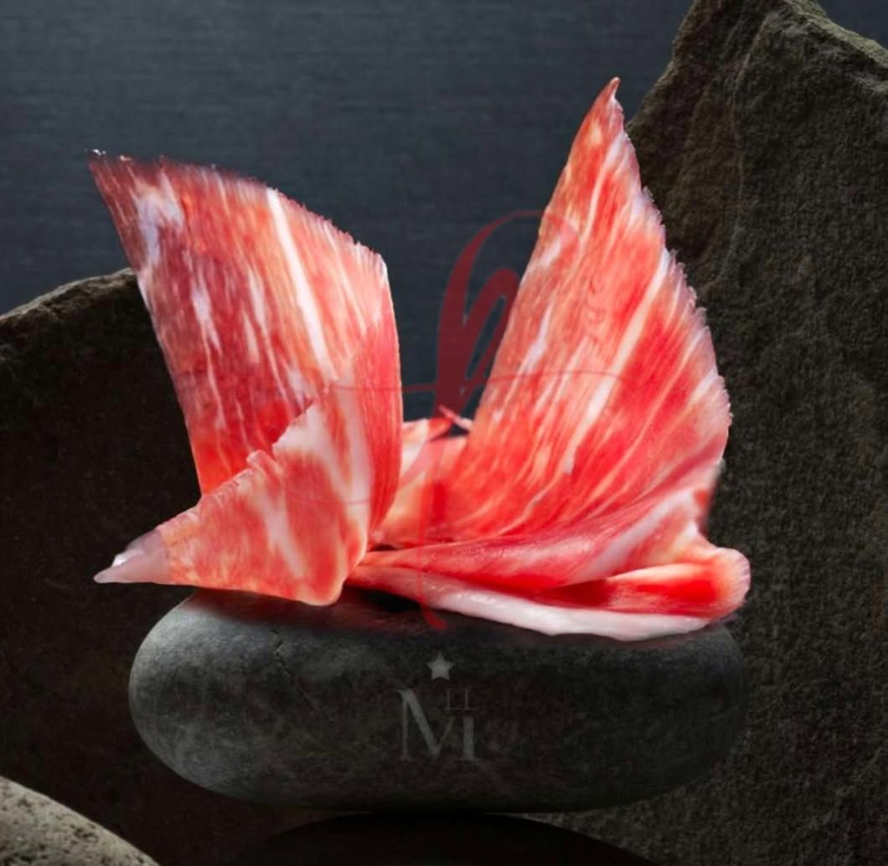

Del mercado a la mesa, cruzando la calle.
Tapas, platos de cocina de mercado y bocadillos en la calle Santa Bàrbara, justo enfrente del mercado municipal de Benifaió.
Comprobando horario…


81 reseñas
4,1 81 reseñas en Google
Materia prima fresca y de calidad
Tapas, cocina de mercado y bocadillos
Unos 20 a 30 euros por persona
La carta, como el ticket de la compra
Lo que sale de cocina, apuntado tal cual en caja: para picar, de cuchara y de cazuela, y el bocadillo. Con el precio a la vista.
Tel. 961 78 11 63 Carta de la casa
Para picar
- 1Conservas con pan tostado9,00
- 1Jamón cortado a cuchillo18,00
- 1Queso con pan y encurtido10,00
De cuchara y cazuela
- 1Arroz caldoso de gamba y pulpo14,00
- 1Gambas con garbanzos16,00
- 1Setas guisadas11,00
Del mercado
- 1Gambas con salsa y caviar19,00
- 1Carne guisada con algas15,00
Bocadillos y bebida
- 1Bocadillo especial6,50
- 1Vino y cerveza2,80
Gracias por pasar por el mercado
Reservar mesa



Producto del mercado de enfrente
Reservar mesa lleva un minuto
- Llama o escribe
Al 961 78 11 63 o por WhatsApp. Sin aplicaciones ni comisiones de por medio.
- Di cuándo y cuántos sois
Día, hora y número de personas. Si hay algo que evitar, dínoslo ahora.
- Cruza la calle del mercado
Estamos en Santa Bàrbara, 14. Te esperamos con la mesa preparada.
Lo que cuentan quienes ya se han sentado
Heredero del buen hacer y tradición del mítico Dani Piles, regentado actualmente por Miguel Ángel, su cocina se distingue por la calidad del producto, tanto en sus tapas, platos de cocina tradicional de mercado, como en sus bocadillos.
Sencilla pero buena selección de vinos y cervezas.
Servicio familiar y amable.
Precio por persona €20-30
Comida excelente, seleccion de vinos completa y atención y servicio exquisito. Mejor probar!!
Si quieres darle un placer a tu paladar no lo dudes, lugar recomendado.
Lo que más se repite en las reseñas de Google
- Materia prima fresca y de calidad
- Buen vino y bocatas especiales
- Buena comida casera con muy buen producto
Mira cómo sale de cocina
Fotos de platos y barra, tal y como las publican en su página de Facebook.
Síguenos en Facebook



Dónde estamos
Carrer de Santa Bàrbara, 1446450 Benifaió (Valencia)
Frente al mercado municipal
961 78 11 63
| Lunes | 9:00 a 16:00 |
|---|---|
| Martes | 9:00 a 16:00 |
| Miércoles | 9:00 a 16:00 |
| Jueves | 9:00 a 16:00 |
| Viernes | 9:00 a 16:00 |
| Sábado | 9:00 a 16:00 |
| Domingo | 9:00 a 16:00 |